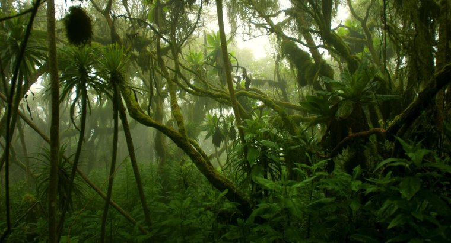
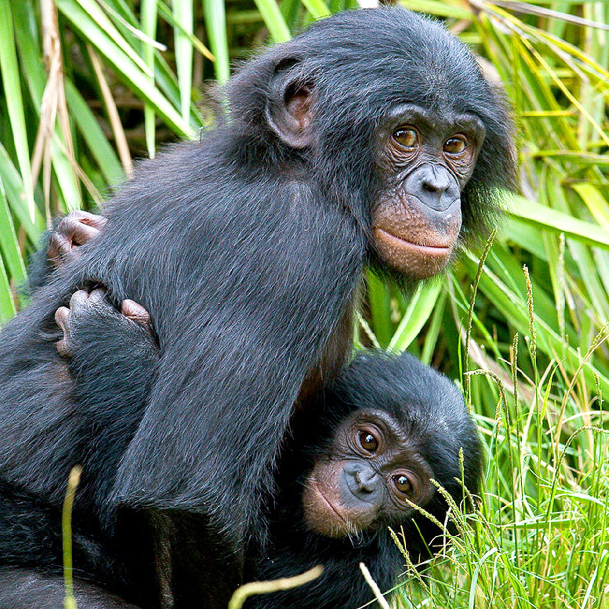
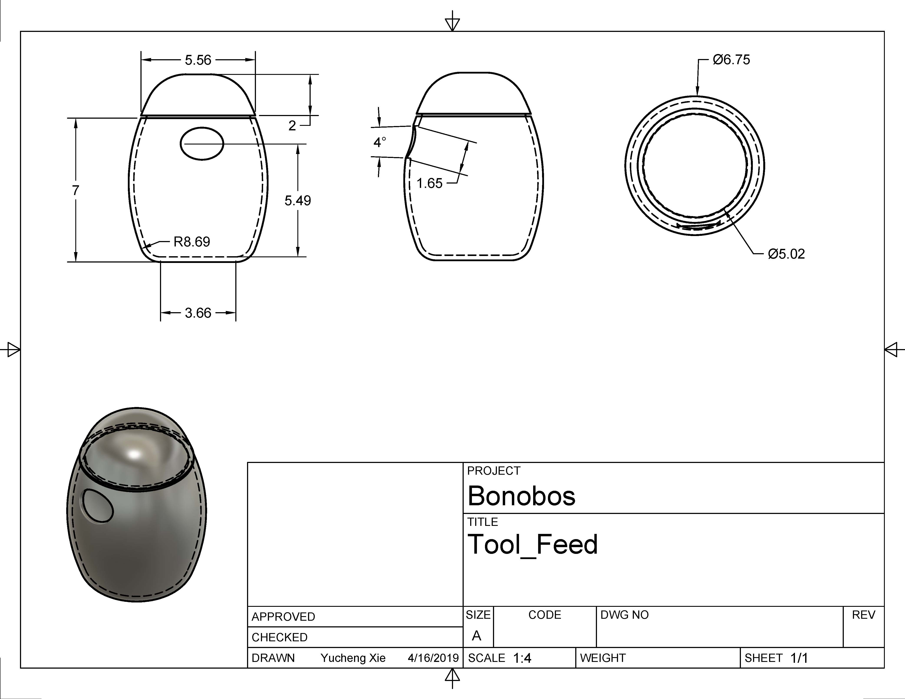
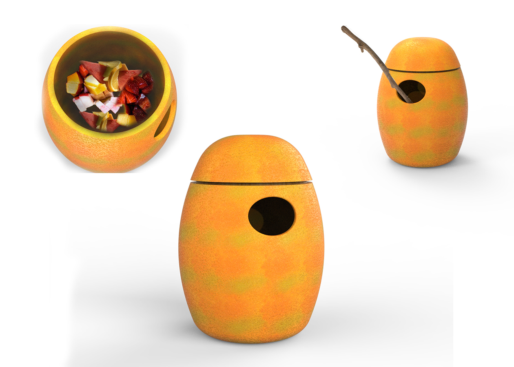
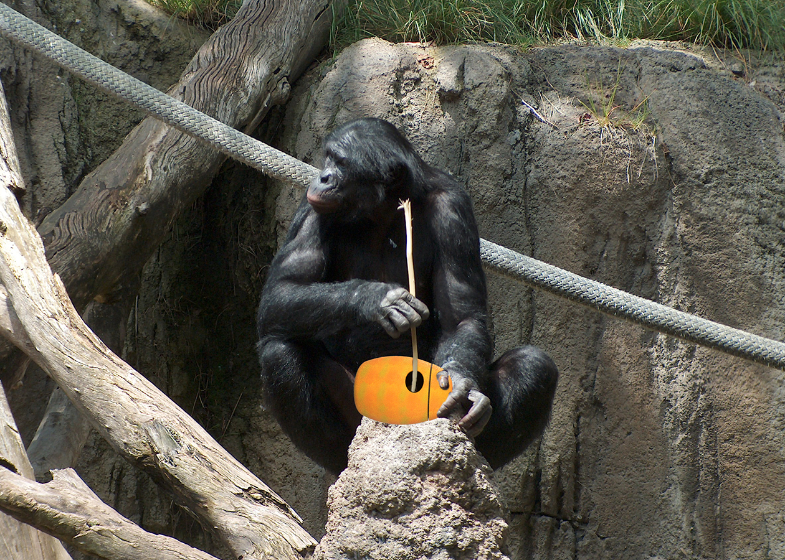
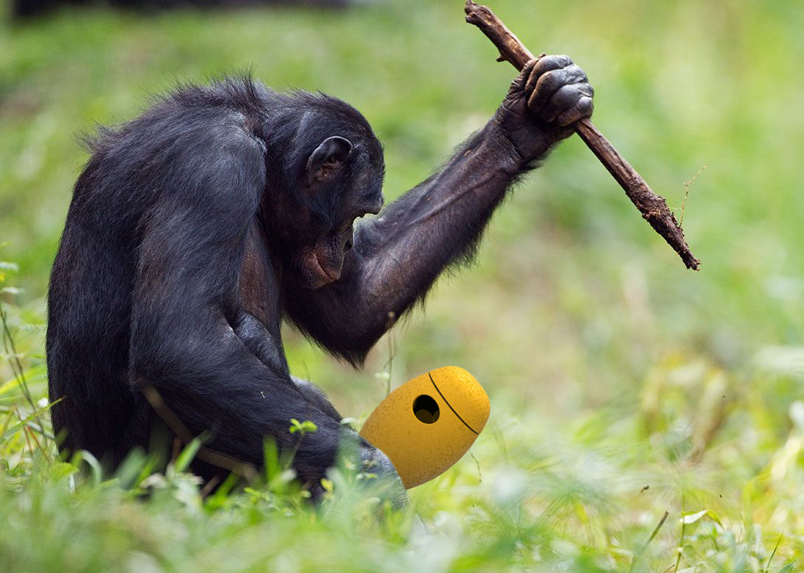
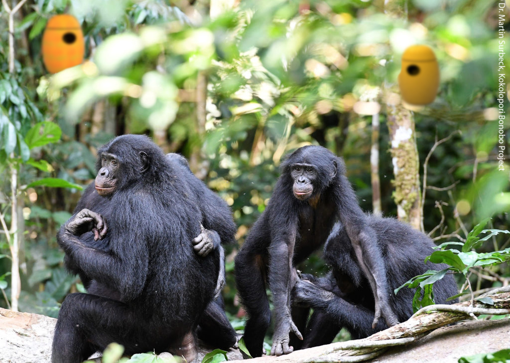
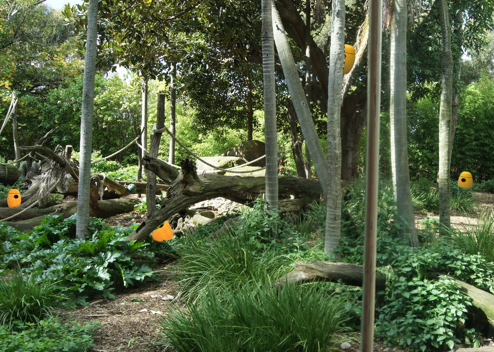
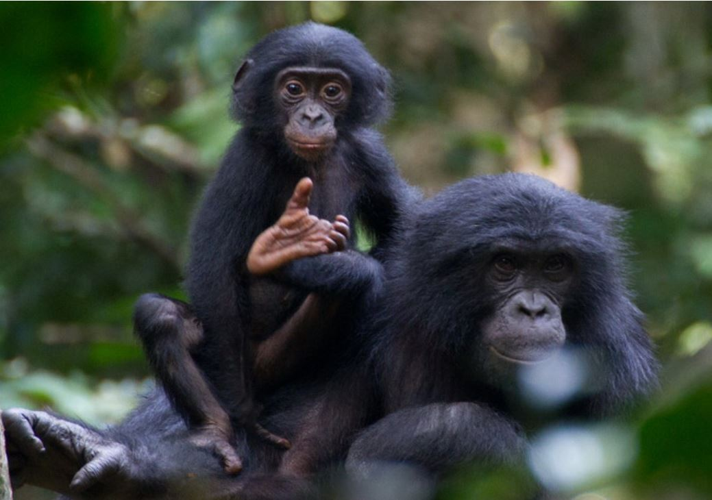

Week 12
Understanding the Bonobos

What Do They Need
While extending my research on the Bonobos past week, I continuously getting marmorized by their intellectual ability and fascinated by many experiments that can help us further understanding them and even with that to further understand ourselves. However, I did come to the realization that what's more important is their preservation and how to improve their lives in captives and protect them.
While my last prototype highly focused on the Bonobo'' facial recognition ability and how they are capable of understanding facial expression, I do think the design and the end-product does not seem to serve them as much as I would like to. I decided then to take a different approach on how to improve their living experience in captivity.

The Bonobos specifically dwell in the tropical forests of the Congo Basin south of the Congo River, and are only found in that region. Most of their habitat destructions are resulted from slash-and-burn subsistence agriculture, which is most intense where human densities are highest and growing. In addition, based on Bonobos' size and thier mobility on lands and tree, there are few natural predators. Most of their endangerment are coming from Human. With their long interbirth interval (various from 4.5 - 8 years), and later maturity (13-15 years), poaching is the number one threat to the bonobos.

Learning About the Bonobos
Other than their amazing abilities on facial recognition mentioned previously, bonobos are also special in many ways. They rarely show aggression, rather, they would solve conflicts with intimate physical interaction. Both male and female will engage in same sex non reproductive sexual behaviour as reconciliation to reduce tension. Other than their fascinating and sometime "over-analyzed" sexual behaviour bonobos are also engaged in behaviours such as voluntary food sharing and using tools for hunting.
More on Thier Lives in Captivity
Studies hasve shown, that there are some behaviours that haven't been seen as much in the wild, such as hair pluck. The scientist found that bonobos tend to groom more while indoors, and the hair plunking behaviour also increased during indoor hours. They have not observed any wild-born individual perform plunking before. While being housed with other bonobos who frequently hair pluck, they are still rarely the recipient of the plunking. This might suggest early exposure and observation of hair plucking, or the lack thereof, influences the development of the behavior. Yet there no conclusion on how this behaviour is developed or what impacts it has on the bonobos.
Since there are only 7 institutions in the States with bonobo exhibit, it is hard for me to observe them in person. However, I was lucky enough to find this footage of three bonobos at San Diego Zoo. In this footage we can also witness the grooming behaviour presents between two of the bonobos. During this 18-minute-long video, there seems to be not much going on. That's because bonobos spend about 43% of their time resting and rest divided in foraging, feeding and traveling. However, while in captivity, bonobos spend less time one traveling and foraging.
"Fun" for a Reason
Previously I was looking into too much "what can they do", rather than "what they need". Based on the researches I've done this week and my newly adjusted perspectives and goals, my new approach is to create the "experience" of foraging and hunting for the bonobos in captivity.
Stage One
At Stage One, I designed a food container that would require the bonobos using tools to get the food content inside. Based on the various research and observations done in the past, I am fairly confident that the bonobos are motivated enough to engage and soon figure out how to get the content out of the container. At the stage one, this device isn't too out of reach of their ability and the amount of effort it requires is a bit higher yet similar to what they would do while foraging.
The exterior of the device is currently designed to have adequate amount of similarity to fruits but not enough for them to mistake the device. Although in past experiments, bonobos have shown few difficulties with interacting novel objects. The devices will be spread out in their space of living. Ideally this will require both arboreal terrestrial locomotion in terms of reaching the devices.
However, this device will not solely replace feeding from the Zoos or Sanctuaries. While the feeding from the institutions can be seen as the "fallback" food, even though the nutrition value won't be as low as they would've have encountered in the wild, it does help them practice their survival skills as in balancing fallback food and staple food. Especially they will less likely run into situation where preferred food is in scarce. Studies has shown that the importance of fallback food and how it help the bonobos subsist at high densities and to maintain cohesive groups.





Future Stages in development
In addition, I am currently working on a "floor plan" that can encourage the bonobos to engage more with arboreal locomotion. One study has shown that during captivity the bonobos has shown increasing engagement with terrestrial locomotion, especially with biped. On top of this, I would also love to tap into their voluntary food sharing behavior at futuer stages.
[Click Here to View Full Research Paper] [Click Here to View Full Research Paper] [Click Here to View Full Research Paper]
[Click Here to View Full Research Paper] [Click Here to View Full Research Paper] [Click Here to View Full Research Paper]
[Click Here to View Full Research Paper] [Click Here to View Full Research Paper] [Click Here to View Full Research Paper]
[Click Here to View Full Research Paper] [Click Here to View Full Research Paper] [Click Here to View Full Research Paper]
Expert's Feedback
I was fortunate enought to be connected with Jessica and recieved her comments on both of mine protptypes:
"First Approach: I really like that you are thinking about using their natural inclinations to match up facial expressions and am interested how this would work in reality. You talked a lot about having a reward that isn’t food which I also like. It is often difficult, however, to find a reward that is as motivating as food. It really depends on the species AND individual. We have a ratel (honey badger) that will work for a burlap sack that she likes to sleep in. This device would need to be encased in a heavy duty housing or only presented outside of the enclosure in a way that they bonobos could reach through to matipulate.
Second Approach: I applaud all of your research and thought behind this idea. Scattering resources is super beneficial and something that doesn’t always happen. This device, however, is very similar to a lot of the devices that are already out there for primate enrichment. Can you make it more challenging or unique in some way? Also, if they were small and not anchored I think the bonobos could throw them or even unscrew the top cap."
Moving Forward
Based on Jessica's suggestions, I feel more confident in continuening exploring with thier intellectual abilities, at the same time I would also like to focus on their basic needs since the fragmentation of their natural habitat seems to be continuing, and the possibilities of them returning back to Congo in the near future seems low. Moving forward I would focusing on combining both ideas together. Idealy I would love to have a coherent space design that fits their needs and different areas with both the "Slot Machine" and food-sharing room with the fallback food devices.
